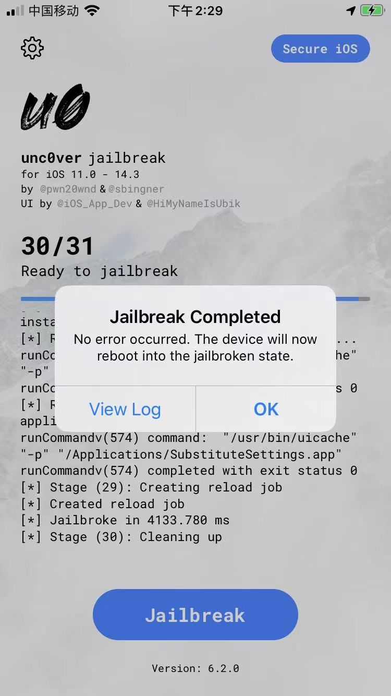

用unc0ver 6.0.2给iOS 13.6.1的iPhone7越狱的详细日志
此处记录，用unc0ver 6.0.2给iOS 13.6.1的iPhone7越狱的最后一步：
- Jailbreak Completed
- 
时，在点击了View Log而查看到的详细日志：
[*] unc0ver is not for sale
[*] If you purchased unc0ver, please report the seller
[*] Get unc0ver for free at https://unc0ver.dev
[*] Configured to share anonymous OS crash logs
[*] Machine Name: iPhone9,1
[*] Model Name: D10AP
[*] Kernel Version: Darwin Kernel Version 19.6.0: Sat Jun 27 04:35:37 PDT 2020; root:xnu-6153.142.1~4/RELEASE_ARM64_T8010
[*] Processor Version: A10
[*] Kernel Page Size: 0x4000
[*] System Version: iOS 13.6.1 (Stable) (Build: 17G80)
[*] Stage (1): Ensuring resources
[+] Ensured resources
[*] Stage (2): Exploiting kernel
[+] Exploited kernel
[*] Stage (3): Initializing
[*] Stage (4): Finding kernel slide
[+] Found kernel slide: 0xf14c000
[*] Stage (5): Finding kernel offsets
[+] Found kernel offsets
[*] Stage (6): Finding data structures
[+] Found data structures
[*] Stage (7): Finding kernel offsets
[+] Found kernel offsets
[*] Stage (8): Obtaining root privileges
[+] Obtained root privileges
[*] Stage (9): Disabling sandbox
[+] Disabled sandbox
[*] Stage (10): Updating host port
[+] Updated host port
[*] Stage (11): Finding kernel offsets
[+] Found kernel offsets
[*] Stage (12): Enabling dynamic codesign
[+] Enabled dynamic codesigning
[*] Stage (14): Saving kernel task port
[+] Saved kernel task port
[*] Stage (15): Saving kernel task info
[+] Saved kernel task info
[*] Stage (17): Disabling codesigning
[+] Disabled codesigning
[*] Stage (18): Obtaining entitlements
[+] Obtained entitlements
[*] Stage (19): Purging software updates
: Performing command: PurgeSuspendedUpdate
: Performing se command: PurgeSuspendedUpdate
[+] Purged software updates
[*] Stage (20): Setting boot-nonce generator
[+] Set boot-nonce generator
[*] Stage (21): Remounting root filesystem
[+] Remounted root filesystem
[*] Stage (22): Preparing filesystem
[+] Enabled code substitution
[+] Prepared filesystem
[*] Stage (23): Resolving dependencies
[*] Resource Pkgs: "(
bzip2,
"coreutils-bin",
diffutils,
file,
sed,
findutils,
gzip,
libplist3,
firmware,
"ca-certificates",
"libssl1.1.1",
ldid,
lzma,
"ncurses5-libs",
"profile.d",
coreutils,
ncurses,
xz,
tar,
dpkg,
grep,
readline,
bash,
launchctl,
"com.ex.substitute"
)".
[+] Resolved dependencies
[*] Stage (24): Verifying resources
[+] Verified "usr/bin/dirname"
[+] Verified "bin/bzip2"
[+] Verified "bin/bzip2recover"
[*] No errors in verifying checksums
[+] Verified "bin/cat"
[+] Verified "usr/bin/cmp"
[+] Pkg "bzip2" verified.
[+] Verified "bin/echo"
[+] Verified "usr/bin/diff"
[+] Verified "usr/bin/file"
[+] Verified "bin/pwd"
[+] Verified "usr/include/magic.h"
[+] Verified "usr/bin/diff3"
[+] Verified "bin/touch"
[+] Verified "bin/sed"
[*] No errors in verifying checksums
[+] Pkg "sed" verified.
[+] Verified "usr/lib/libmagic.1.dylib"
[+] Verified "usr/bin/sdiff"
[+] Verified "bin/gunzip"
[*] No errors in verifying checksums
[+] Pkg "diffutils" verified.
[+] Verified "bin/gzexe"
[+] Verified "usr/bin/find"
[+] Verified "etc/profile.d/cacerts.bootstrap.sh"
[+] Verified "usr/lib/libmagic.a"
[+] Verified "bin/sleep"
[+] Verified "usr/lib/libplist.3.dylib"
[*] No errors in verifying checksums
[+] Pkg "libplist3" verified.
[+] Verified "bin/gzip"
[+] Verified "bin/stty"
[+] Verified "etc/ssl/certs/cacert.pem"
[*] No errors in verifying checksums
[+] Pkg "ca-certificates" verified.
[+] Verified "usr/bin/locate"
[+] Verified "bin/uncompress"
[+] Verified "usr/bin/updatedb"
[+] Verified "bin/zcat"
[+] Verified "bin/zcmp"
[+] Verified "usr/bin/lzdiff"
[+] Verified "bin/chgrp"
[+] Verified "usr/bin/xargs"
[+] Verified "usr/bin/lzgrep"
[+] Verified "bin/zdiff"
[+] Verified "usr/libexec/ldid"
[*] No errors in verifying checksums
[+] Pkg "ldid" verified.
[+] Verified "bin/zegrep"
[+] Verified "etc/profile"
[+] Verified "bin/zfgrep"
[+] Verified "etc/profile.d/terminal.sh"
[*] No errors in verifying checksums
[+] Pkg "profile.d" verified.
[+] Verified "bin/zforce"
[+] Verified "usr/libexec/bigram"
[+] Verified "bin/zgrep"
[+] Verified "bin/uname"
[+] Verified "bin/zless"
[+] Verified "usr/lib/libform.5.dylib"
[+] Verified "usr/bin/lzma"
[+] Verified "bin/zmore"
[+] Verified "bin/znew"
[*] No errors in verifying checksums
[+] Pkg "gzip" verified.
[+] Verified "usr/libexec/code"
[+] Verified "usr/lib/libcrypto.1.1.dylib"
[+] Verified "usr/lib/libformw.5.dylib"
[+] Verified "usr/bin/lzmadec"
[+] Verified "usr/bin/tee"
[+] Verified "bin/date"
[+] Verified "usr/libexec/frcode"
[*] No errors in verifying checksums
[+] Pkg "findutils" verified.
[+] Verified "usr/bin/lzmainfo"
[+] Verified "usr/bin/clear"
[+] Verified "usr/share/misc/magic.mgc"
[*] No errors in verifying checksums
[+] Pkg "file" verified.
[+] Verified "usr/lib/libmenu.5.dylib"
[+] Verified "usr/bin/xz"
[+] Verified "usr/bin/md5sum"
[+] Verified "bin/readlink"
[+] Verified "usr/bin/lzmore"
[+] Verified "usr/lib/libssl.1.1.dylib"
[+] Verified "usr/include/lzmadec.h"
[+] Verified "usr/bin/xzdec"
[+] Verified "usr/bin/infocmp"
[+] Verified "usr/lib/libmenuw.5.dylib"
[+] Verified "bin/kill"
[+] Verified "usr/lib/engines-1.1/capi.dylib"
[+] Verified "usr/bin/xzdiff"
[+] Verified "usr/bin/ncurses6-config"
[+] Verified "usr/bin/split"
[+] Verified "bin/tar"
[*] No errors in verifying checksums
[+] Verified "usr/bin/ncursesw6-config"
[+] Verified "usr/bin/xzgrep"
[+] Verified "usr/lib/engines-1.1/padlock.dylib"
[*] No errors in verifying checksums
[+] Verified "usr/lib/liblzmadec.0.dylib"
[+] Pkg "tar" verified.
[+] Pkg "libssl1.1.1" verified.
[+] Verified "usr/bin/xzless"
[+] Verified "bin/su"
[+] Verified "usr/bin/shuf"
[+] Verified "usr/lib/libncurses.5.dylib"
[+] Verified "usr/bin/xzmore"
[*] No errors in verifying checksums
[+] Pkg "lzma" verified.
[+] Verified "etc/alternatives/README"
[+] Verified "usr/include/lzma.h"
[+] Verified "bin/mknod"
[+] Verified "bin/egrep"
[+] Verified "usr/bin/mkfifo"
[+] Verified "usr/include/readline/chardefs.h"
[+] Verified "bin/fgrep"
[+] Verified "usr/bin/tic"
[+] Verified "usr/include/lzma/base.h"
[+] Verified "usr/include/readline/history.h"
[+] Verified "usr/lib/libncursesw.5.dylib"
[+] Verified "usr/include/readline/keymaps.h"
[+] Verified "usr/bin/dpkg"
[+] Verified "bin/dd"
[+] Verified "usr/bin/pathchk"
[+] Verified "usr/include/lzma/bcj.h"
[+] Verified "usr/lib/libpanel.5.dylib"
[+] Verified "usr/bin/toe"
[+] Verified "usr/include/lzma/block.h"
[+] Verified "usr/include/readline/readline.h"
[+] Verified "usr/lib/libpanelw.5.dylib"
[*] No errors in verifying checksums
[+] Pkg "ncurses5-libs" verified.
[+] Verified "usr/include/lzma/check.h"
[+] Verified "usr/bin/dpkg-deb"
[+] Verified "usr/bin/tput"
[+] Verified "bin/mktemp"
[+] Verified "bin/grep"
[*] No errors in verifying checksums
[+] Pkg "grep" verified.
[+] Verified "usr/bin/tset"
[+] Verified "usr/include/readline/rlconf.h"
[+] Verified "usr/bin/runcon"
[+] Verified "usr/include/lzma/container.h"
[+] Verified "usr/include/readline/rlstdc.h"
[+] Verified "usr/bin/dpkg-divert"
[+] Verified "usr/include/lzma/delta.h"
[+] Verified "usr/bin/dpkg-maintscript-helper"
[+] Verified "usr/include/readline/rltypedefs.h"
[+] Verified "usr/include/lzma/filter.h"
[+] Verified "usr/include/readline/tilde.h"
[+] Verified "bin/bash"
[+] Verified "usr/bin/expand"
[+] Verified "usr/include/lzma/hardware.h"
[+] Verified "bin/dir"
[+] Verified "usr/bin/bashbug"
[+] Verified "usr/include/lzma/index.h"
[+] Verified "usr/include/curses.h"
[+] Verified "usr/include/bash/alias.h"
[+] Verified "usr/include/lzma/index_hash.h"
[+] Verified "usr/include/eti.h"
[+] Verified "usr/include/bash/array.h"
[+] Verified "usr/include/lzma/lzma12.h"
[+] Verified "usr/lib/libhistory.8.0.dylib"
[+] Verified "usr/bin/tty"
[+] Verified "bin/launchctl"
[+] Verified "usr/include/form.h"
[+] Verified "usr/include/lzma/stream_flags.h"
[+] Verified "bin/mkdir"
[*] No errors in verifying checksums
[+] Verified "usr/bin/dpkg-query"
[+] Pkg "launchctl" verified.
[+] Verified "usr/include/menu.h"
[+] Verified "usr/include/bash/arrayfunc.h"
[+] Verified "usr/include/nc_tparm.h"
[+] Verified "usr/bin/basename"
[+] Verified "usr/lib/libreadline.8.0.dylib"
[+] Verified "bin/rmdir"
[+] Verified "usr/include/ncurses_dll.h"
[+] Verified "Applications/SubstituteSettings.app/AppIcon20x20@2x.png"
[+] Verified "usr/include/bash/assoc.h"
[+] Verified "Applications/SubstituteSettings.app/AppIcon20x20@2x~ipad.png"
[+] Verified "usr/include/panel.h"
[+] Verified "usr/bin/dpkg-split"
[+] Verified "usr/bin/install"
[+] Verified "usr/lib/pkgconfig/readline.pc"
[*] No errors in verifying checksums
[+] Verified "usr/include/lzma/version.h"
[+] Verified "usr/include/term.h"
[+] Verified "Applications/SubstituteSettings.app/AppIcon20x20@3x.png"
[+] Verified "usr/bin/dpkg-statoverride"
[+] Verified "usr/include/bash/bashansi.h"
[+] Pkg "readline" verified.
[+] Verified "usr/include/lzma/vli.h"
[+] Verified "usr/bin/nice"
[+] Verified "usr/include/bash/bashintl.h"
[+] Verified "usr/include/term_entry.h"
[+] Verified "Applications/SubstituteSettings.app/AppIcon20x20~ipad.png"
[+] Verified "bin/mv"
[+] Verified "usr/include/bash/bashjmp.h"
[+] Verified "usr/include/termcap.h"
[+] Verified "Applications/SubstituteSettings.app/AppIcon29x29@2x.png"
[+] Verified "usr/include/bash/bashtypes.h"
[+] Verified "usr/bin/dpkg-trigger"
[+] Verified "usr/include/tic.h"
[+] Verified "Applications/SubstituteSettings.app/AppIcon29x29@2x~ipad.png"
[+] Verified "usr/include/bash/builtins.h"
[+] Verified "usr/include/unctrl.h"
[+] Verified "usr/bin/truncate"
[+] Verified "Applications/SubstituteSettings.app/AppIcon29x29@3x.png"
[+] Verified "usr/local/lib/liblzma.5.dylib"
[+] Verified "usr/include/bash/command.h"
[+] Verified "Applications/SubstituteSettings.app/AppIcon29x29~ipad.png"
[+] Verified "usr/include/bash/config-bot.h"
[+] Verified "bin/ln"
[+] Verified "Applications/SubstituteSettings.app/AppIcon40x40@2x.png"
[+] Verified "usr/local/lib/pkgconfig/liblzma.pc"
[+] Verified "usr/include/bash/config-top.h"
[+] Verified "usr/bin/dselect"
[+] Verified "usr/local/lib/pkgconfig/liblzma.pce"
[*] No errors in verifying checksums
[+] Pkg "xz" verified.
[+] Verified "usr/include/ncursesw/curses.h"
[+] Verified "usr/include/ncursesw/eti.h"
[+] Verified "usr/include/bash/config.h"
[+] Verified "Applications/SubstituteSettings.app/AppIcon40x40@2x~ipad.png"
[+] Verified "usr/bin/du"
[+] Verified "usr/include/ncursesw/form.h"
[+] Verified "Applications/SubstituteSettings.app/AppIcon40x40~ipad.png"
[+] Verified "usr/include/bash/conftypes.h"
[+] Verified "usr/include/ncursesw/menu.h"
[+] Verified "bin/ls"
[+] Verified "usr/bin/update-alternatives"
[+] Verified "Applications/SubstituteSettings.app/AppIcon60x60@2x.png"
[+] Verified "usr/include/ncursesw/nc_tparm.h"
[+] Verified "usr/include/dpkg/ar.h"
[+] Verified "usr/include/bash/dispose_cmd.h"
[+] Verified "bin/true"
[+] Verified "Applications/SubstituteSettings.app/AppIcon60x60@3x.png"
[+] Verified "usr/include/bash/error.h"
[+] Verified "usr/bin/ptx"
[+] Verified "Applications/SubstituteSettings.app/AppIcon76x76@2x~ipad.png"
[+] Verified "usr/include/bash/externs.h"
[+] Verified "usr/include/dpkg/arch.h"
[+] Verified "Applications/SubstituteSettings.app/AppIcon76x76~ipad.png"
[+] Verified "usr/include/ncursesw/ncurses_dll.h"
[+] Verified "usr/include/bash/general.h"
[+] Verified "usr/include/dpkg/atomic-file.h"
[+] Verified "Applications/SubstituteSettings.app/AppIcon83.5x83.5@2x~ipad.png"
[+] Verified "usr/include/ncursesw/panel.h"
[+] Verified "usr/include/bash/hashlib.h"
[+] Verified "bin/cp"
[+] Verified "usr/include/bash/jobs.h"
[+] Verified "usr/include/dpkg/buffer.h"
[+] Verified "usr/include/bash/make_cmd.h"
[+] Verified "usr/include/dpkg/c-ctype.h"
[+] Verified "usr/include/bash/pathnames.h"
[+] Verified "Applications/SubstituteSettings.app/Assets.car"
[+] Verified "usr/include/bash/quit.h"
[+] Verified "bin/chown"
[+] Verified "usr/bin/join"
[+] Verified "usr/include/dpkg/color.h"
[+] Verified "usr/include/bash/shell.h"
[+] Verified "Applications/SubstituteSettings.app/Info.plist"
[+] Verified "usr/include/ncursesw/term.h"
[+] Verified "usr/include/dpkg/command.h"
[+] Verified "usr/include/bash/sig.h"
[+] Verified "usr/bin/test"
[+] Verified "usr/include/bash/siglist.h"
[+] Verified "usr/include/dpkg/compress.h"
[+] Verified "bin/chmod"
[+] Verified "usr/include/bash/signames.h"
[+] Verified "usr/include/ncursesw/term_entry.h"
[+] Verified "usr/include/bash/subst.h"
[+] Verified "usr/bin/csplit"
[+] Verified "usr/include/dpkg/db-ctrl.h"
[+] Verified "usr/include/bash/syntax.h"
[+] Verified "usr/include/ncursesw/termcap.h"
[+] Verified "bin/rm"
[+] Verified "usr/include/ncursesw/tic.h"
[+] Verified "usr/include/dpkg/db-fsys.h"
[+] Verified "usr/include/ncursesw/unctrl.h"
[+] Verified "usr/include/bash/unwind_prot.h"
[+] Verified "Applications/SubstituteSettings.app/LaunchImage-1100-Landscape-2436h@3x.png"
[+] Verified "usr/include/dpkg/deb-version.h"
[+] Verified "usr/include/bash/variables.h"
[+] Verified "usr/include/dpkg/debug.h"
[+] Verified "usr/bin/sort"
[+] Verified "usr/include/bash/version.h"
[+] Verified "bin/vdir"
[+] Verified "Applications/SubstituteSettings.app/LaunchImage-1100-Portrait-2436h@3x.png"
[+] Verified "usr/include/bash/xmalloc.h"
[+] Verified "usr/include/dpkg/dir.h"
[+] Verified "usr/lib/libform.6.dylib"
[+] Verified "usr/bin/whoami"
[+] Verified "bin/false"
[*] No errors in verifying checksums
[+] Pkg "coreutils-bin" verified.
[+] Verified "usr/include/bash/y.tab.h"
[+] Verified "usr/include/dpkg/dpkg-db.h"
[+] Verified "usr/include/bash/builtins/bashgetopt.h"
[+] Verified "usr/include/dpkg/dpkg.h"
[+] Verified "Applications/SubstituteSettings.app/LaunchImage-1200-Landscape-1792h@2x.png"
[+] Verified "usr/lib/libformw.6.dylib"
[+] Verified "usr/include/bash/builtins/builtext.h"
[+] Verified "usr/include/dpkg/ehandle.h"
[+] Verified "usr/include/bash/builtins/common.h"
[+] Verified "usr/include/dpkg/error.h"
[+] Verified "usr/bin/unlink"
[+] Verified "usr/include/bash/builtins/getopt.h"
[+] Verified "usr/include/dpkg/fdio.h"
[+] Verified "usr/include/bash/include/ansi_stdlib.h"
[+] Verified "usr/include/dpkg/file.h"
[+] Verified "Applications/SubstituteSettings.app/LaunchImage-1200-Landscape-2688h@3x.png"
[+] Verified "usr/lib/libmenu.6.dylib"
[+] Verified "usr/include/bash/include/chartypes.h"
[+] Verified "usr/include/dpkg/fsys.h"
[+] Verified "usr/include/bash/include/filecntl.h"
[+] Verified "usr/bin/b2sum"
[+] Verified "usr/include/dpkg/glob.h"
[+] Verified "usr/include/bash/include/gettext.h"
[+] Verified "usr/include/dpkg/macros.h"
[+] Verified "usr/include/bash/include/maxpath.h"
[+] Verified "usr/lib/libmenuw.6.dylib"
[+] Verified "Applications/SubstituteSettings.app/LaunchImage-1200-Portrait-1792h@2x.png"
[+] Verified "usr/bin/fmt"
[+] Verified "usr/include/dpkg/namevalue.h"
[+] Verified "usr/include/bash/include/memalloc.h"
[+] Verified "usr/include/dpkg/options.h"
[+] Verified "usr/include/bash/include/ocache.h"
[+] Verified "usr/include/dpkg/pager.h"
[+] Verified "usr/include/bash/include/posixdir.h"
[+] Verified "usr/include/dpkg/parsedump.h"
[+] Verified "usr/bin/logname"
[+] Verified "usr/include/dpkg/path.h"
[+] Verified "Applications/SubstituteSettings.app/LaunchImage-1200-Portrait-2688h@3x.png"
[+] Verified "usr/include/bash/include/posixjmp.h"
[+] Verified "usr/lib/libncurses.6.dylib"
[+] Verified "usr/include/dpkg/pkg-array.h"
[+] Verified "usr/include/bash/include/posixstat.h"
[+] Verified "usr/include/dpkg/pkg-files.h"
[+] Verified "usr/include/bash/include/posixtime.h"
[+] Verified "Applications/SubstituteSettings.app/LaunchImage-700-568h@2x.png"
[+] Verified "usr/include/dpkg/pkg-format.h"
[+] Verified "usr/bin/printenv"
[+] Verified "usr/include/dpkg/pkg-list.h"
[+] Verified "usr/include/bash/include/posixwait.h"
[+] Verified "usr/include/dpkg/pkg-queue.h"
[+] Verified "usr/include/bash/include/shmbchar.h"
[+] Verified "usr/include/bash/include/shmbutil.h"
[+] Verified "usr/lib/libncursesw.6.dylib"
[+] Verified "usr/include/dpkg/pkg-show.h"
[+] Verified "Applications/SubstituteSettings.app/LaunchImage-700-Landscape@2x~ipad.png"
[+] Verified "usr/include/dpkg/pkg-spec.h"
[+] Verified "usr/bin/seq"
[+] Verified "usr/include/bash/include/shtty.h"
[+] Verified "usr/lib/libpanel.6.dylib"
[+] Verified "Applications/SubstituteSettings.app/LaunchImage-700-Landscape~ipad.png"
[+] Verified "usr/include/dpkg/pkg.h"
[+] Verified "usr/include/bash/include/stat-time.h"
[+] Verified "usr/lib/libpanelw.6.dylib"
[+] Verified "usr/include/bash/include/stdc.h"
[+] Verified "usr/include/dpkg/progname.h"
[+] Verified "usr/lib/pkgconfig/form.pc"
[+] Verified "usr/include/dpkg/program.h"
[+] Verified "Applications/SubstituteSettings.app/LaunchImage-700-Portrait@2x~ipad.png"
[+] Verified "usr/include/bash/include/systimes.h"
[+] Verified "usr/lib/pkgconfig/formw.pc"
[+] Verified "usr/lib/pkgconfig/menu.pc"
[+] Verified "usr/bin/sha224sum"
[+] Verified "usr/include/bash/include/typemax.h"
[+] Verified "Applications/SubstituteSettings.app/LaunchImage-700-Portrait~ipad.png"
[+] Verified "usr/include/dpkg/progress.h"
[+] Verified "Applications/SubstituteSettings.app/LaunchImage-700@2x.png"
[+] Verified "usr/include/dpkg/report.h"
[+] Verified "usr/lib/pkgconfig/menuw.pc"
[+] Verified "usr/include/bash/include/unionwait.h"
[+] Verified "usr/include/dpkg/string.h"
[+] Verified "usr/lib/pkgconfig/ncurses.pc"
[+] Verified "usr/bin/od"
[+] Verified "usr/lib/bash/Makefile.inc"
[+] Verified "usr/lib/pkgconfig/ncursesw.pc"
[+] Verified "usr/include/dpkg/subproc.h"
[+] Verified "usr/lib/bash/basename"
[+] Verified "usr/include/dpkg/tarfn.h"
[+] Verified "Applications/SubstituteSettings.app/LaunchImage-800-667h@2x.png"
[+] Verified "usr/include/dpkg/treewalk.h"
[+] Verified "usr/bin/base64"
[+] Verified "usr/lib/bash/dirname"
[+] Verified "usr/include/dpkg/trigdeferred.h"
[+] Verified "usr/lib/pkgconfig/panel.pc"
[+] Verified "usr/include/dpkg/triglib.h"
[+] Verified "usr/lib/bash/fdflags"
[+] Verified "usr/include/dpkg/varbuf.h"
[+] Verified "usr/bin/realpath"
[+] Verified "Applications/SubstituteSettings.app/LaunchImage-800-Landscape-736h@3x.png"
[+] Verified "usr/lib/pkgconfig/panelw.pc"
[+] Verified "usr/include/dpkg/version.h"
[+] Verified "usr/share/tabset/std"
[+] Verified "usr/share/tabset/stdcrt"
[+] Verified "usr/lib/bash/finfo"
[+] Verified "usr/bin/dircolors"
[+] Verified "usr/share/tabset/vt100"
[+] Verified "Applications/SubstituteSettings.app/LaunchImage-800-Portrait-736h@3x.png"
[+] Verified "usr/lib/bash/head"
[+] Verified "usr/share/tabset/vt300"
[+] Verified "usr/share/terminfo/A/Apple_Terminal"
[+] Verified "usr/bin/timeout"
[+] Verified "usr/share/terminfo/E/Eterm"
[+] Verified "usr/lib/bash/id"
[+] Verified "usr/lib/libdpkg.a"
[+] Verified "usr/share/terminfo/E/Eterm-256color"
[+] Verified "usr/lib/pkgconfig/libdpkg.pc"
[+] Verified "usr/share/terminfo/E/Eterm-88color"
[+] Verified "Applications/SubstituteSettings.app/SubstituteSettings"
[+] Verified "usr/share/dpkg/abitable"
[+] Verified "usr/lib/bash/ln"
[+] Verified "usr/share/terminfo/E/Eterm-color"
[+] Verified "Applications/SubstituteSettings.app/_CodeSignature/CodeResources"
[+] Verified "usr/share/dpkg/architecture.mk"
[+] Verified "usr/lib/bash/loadables.h"
[+] Verified "usr/share/terminfo/a/ansi"
[+] Verified "usr/share/dpkg/buildflags.mk"
[+] Verified "usr/bin/tac"
[+] Verified "usr/share/terminfo/a/ansi+arrows"
[+] Verified "usr/share/dpkg/buildtools.mk"
[+] Verified "usr/share/terminfo/a/ansi+csr"
[+] Verified "usr/share/dpkg/cputable"
[+] Verified "usr/lib/bash/logname"
[+] Verified "usr/share/terminfo/a/ansi+cup"
[+] Verified "usr/share/dpkg/default.mk"
[+] Verified "usr/share/terminfo/a/ansi+enq"
[+] Verified "usr/bin/numfmt"
[+] Verified "usr/share/terminfo/a/ansi+erase"
[+] Verified "usr/share/terminfo/a/ansi+idc"
[+] Verified "usr/share/terminfo/a/ansi+idc1"
[+] Verified "usr/share/terminfo/a/ansi+idl"
[+] Verified "usr/share/terminfo/a/ansi+idl1"
[+] Verified "usr/share/terminfo/a/ansi+inittabs"
[+] Verified "usr/share/terminfo/a/ansi+local"
[+] Verified "usr/share/dpkg/macho.mgc"
[+] Verified "usr/lib/bash/mkdir"
[+] Verified "usr/share/terminfo/a/ansi+local1"
[+] Verified "usr/share/terminfo/a/ansi+pp"
[+] Verified "usr/share/terminfo/a/ansi+rca"
[+] Verified "usr/share/terminfo/a/ansi+rep"
[+] Verified "usr/share/terminfo/a/ansi+sgr"
[+] Verified "usr/share/dpkg/no-pie-compile.specs"
[+] Verified "usr/share/terminfo/a/ansi+sgrbold"
[+] Verified "usr/bin/wc"
[+] Verified "usr/share/terminfo/a/ansi+sgrdim"
[+] Verified "usr/share/terminfo/a/ansi+sgrso"
[+] Verified "usr/share/dpkg/no-pie-link.specs"
[+] Verified "usr/share/terminfo/a/ansi+sgrul"
[+] Verified "usr/share/terminfo/a/ansi+tabs"
[+] Verified "usr/share/terminfo/a/ansi-color-2-emx"
[+] Verified "usr/share/dpkg/ostable"
[+] Verified "usr/share/terminfo/a/ansi-color-3-emx"
[+] Verified "usr/share/dpkg/pie-compile.specs"
[+] Verified "usr/share/terminfo/a/ansi-emx"
[+] Verified "usr/share/dpkg/pie-link.specs"
[+] Verified "usr/bin/basenc"
[+] Verified "etc/rc.d/substitute-launcher"
[+] Verified "usr/share/terminfo/a/ansi-generic"
[+] Verified "usr/lib/bash/mypid"
[+] Verified "Library/PreferenceBundles/SubstitutePrefs.bundle/Icon.png"
[+] Verified "usr/share/terminfo/a/ansi-m"
[+] Verified "usr/share/dpkg/pkg-info.mk"
[+] Verified "Library/PreferenceBundles/SubstitutePrefs.bundle/Icon@2x.png"
[+] Verified "usr/share/terminfo/a/ansi-mini"
[+] Verified "Library/PreferenceBundles/SubstitutePrefs.bundle/Icon@3x.png"
[+] Verified "usr/bin/comm"
[+] Verified "usr/share/terminfo/a/ansi-mono"
[+] Verified "Library/PreferenceBundles/SubstitutePrefs.bundle/Info.plist"
[+] Verified "usr/lib/bash/pathchk"
[+] Verified "usr/share/terminfo/a/ansi-mr"
[+] Verified "usr/share/dpkg/tupletable"
[+] Verified "usr/share/terminfo/a/ansi-mtabs"
[+] Verified "usr/share/terminfo/a/ansi-nt"
[+] Verified "usr/bin/nproc"
[+] Verified "usr/share/terminfo/a/ansi.sys"
[+] Verified "usr/share/terminfo/a/ansi.sys-old"
[+] Verified "usr/share/terminfo/a/ansi.sysk"
[+] Verified "usr/share/dpkg/vendor.mk"
[+] Verified "usr/share/terminfo/a/apple-80"
[+] Verified "usr/share/terminfo/a/apple-ae"
[+] Verified "usr/share/polkit-1/actions/org.dpkg.pkexec.update-alternatives.policy"
[*] No errors in verifying checksums
[+] Verified "usr/share/terminfo/a/apple-soroc"
[+] Pkg "dpkg" verified.
[+] Verified "usr/share/terminfo/a/apple-uterm"
[+] Verified "usr/share/terminfo/a/apple-uterm-vb"
[+] Verified "usr/share/terminfo/a/apple-videx"
[+] Verified "usr/share/terminfo/a/apple-videx2"
[+] Verified "usr/share/terminfo/a/apple-videx3"
[+] Verified "usr/share/terminfo/a/apple-vm80"
[+] Verified "usr/bin/expr"
[+] Verified "usr/share/terminfo/c/cons25"
[+] Verified "usr/share/terminfo/c/cons25-debian"
[+] Verified "usr/share/terminfo/c/cons25-iso-m"
[+] Verified "usr/bin/stdbuf"
[+] Verified "usr/share/terminfo/c/cons25-iso8859"
[+] Verified "usr/share/terminfo/c/cons25-koi8-r"
[+] Verified "usr/lib/bash/print"
[+] Verified "usr/share/terminfo/c/cons25-koi8r-m"
[+] Verified "usr/share/terminfo/c/cons25-m"
[+] Verified "usr/share/terminfo/c/cygwin"
[+] Verified "usr/share/terminfo/d/dumb"
[+] Verified "usr/share/terminfo/d/dumb-emacs-ansi"
[+] Verified "usr/bin/cksum"
[+] Verified "usr/share/terminfo/e/eterm"
[+] Verified "usr/share/terminfo/e/eterm-color"
[+] Verified "usr/share/terminfo/g/gnome"
[+] Verified "usr/share/terminfo/g/gnome+pcfkeys"
[+] Verified "usr/share/terminfo/g/gnome-2007"
[+] Verified "usr/share/terminfo/g/gnome-2008"
[+] Verified "usr/share/terminfo/g/gnome-2012"
[+] Verified "usr/share/terminfo/g/gnome-256color"
[+] Verified "usr/share/terminfo/g/gnome-fc5"
[+] Verified "usr/share/terminfo/g/gnome-rh62"
[+] Verified "usr/share/terminfo/g/gnome-rh72"
[+] Verified "usr/share/terminfo/g/gnome-rh80"
[+] Verified "usr/lib/bash/printenv"
[+] Verified "usr/share/terminfo/g/gnome-rh90"
[+] Verified "usr/share/terminfo/k/konsole"
[+] Verified "usr/lib/bash/push"
[+] Verified "usr/share/terminfo/k/konsole+pcfkeys"
[+] Verified "usr/share/terminfo/k/konsole-16color"
[+] Verified "usr/share/terminfo/k/konsole-256color"
[+] Verified "usr/share/terminfo/k/konsole-base"
[+] Verified "usr/share/terminfo/k/konsole-direct"
[+] Verified "usr/share/terminfo/k/konsole-linux"
[+] Verified "usr/share/terminfo/k/konsole-solaris"
[+] Verified "usr/bin/printf"
[+] Verified "usr/share/terminfo/k/konsole-vt100"
[+] Verified "usr/share/terminfo/k/konsole-vt420pc"
[+] Verified "usr/share/terminfo/k/konsole-xf3x"
[+] Verified "usr/share/terminfo/k/konsole-xf4x"
[+] Verified "usr/share/terminfo/l/linux"
[+] Verified "usr/share/terminfo/l/linux-16color"
[+] Verified "usr/share/terminfo/l/linux-basic"
[+] Verified "usr/share/terminfo/l/linux-c"
[+] Verified "usr/share/terminfo/l/linux-c-nc"
[+] Verified "usr/share/terminfo/l/linux-koi8"
[+] Verified "usr/share/terminfo/l/linux-koi8r"
[+] Verified "usr/share/terminfo/l/linux-lat"
[+] Verified "usr/share/terminfo/l/linux-m"
[+] Verified "usr/share/terminfo/l/linux-m1"
[+] Verified "usr/share/terminfo/l/linux-m1b"
[+] Verified "usr/share/terminfo/l/linux-m2"
[+] Verified "usr/share/terminfo/l/linux-nic"
[+] Verified "usr/share/terminfo/l/linux-vt"
[+] Verified "usr/share/terminfo/m/mach"
[+] Verified "usr/share/terminfo/m/mach-bold"
[+] Verified "usr/share/terminfo/m/mach-color"
[+] Verified "usr/share/terminfo/m/mach-gnu"
[+] Verified "usr/share/terminfo/m/mach-gnu-color"
[+] Verified "usr/share/terminfo/p/pcansi"
[+] Verified "usr/share/terminfo/p/pcansi-25"
[+] Verified "usr/share/terminfo/p/pcansi-25-m"
[+] Verified "usr/share/terminfo/p/pcansi-33"
[+] Verified "usr/share/terminfo/p/pcansi-33-m"
[+] Verified "usr/share/terminfo/p/pcansi-43"
[+] Verified "usr/share/terminfo/p/pcansi-43-m"
[+] Verified "usr/share/terminfo/p/pcansi-m"
[+] Verified "usr/lib/bash/realpath"
[+] Verified "usr/share/terminfo/p/pcansi-mono"
[+] Verified "usr/share/terminfo/p/putty"
[+] Verified "usr/share/terminfo/p/putty+fnkeys"
[+] Verified "usr/share/terminfo/p/putty+fnkeys+esc"
[+] Verified "usr/share/terminfo/p/putty+fnkeys+linux"
[+] Verified "usr/share/terminfo/p/putty+fnkeys+sco"
[+] Verified "usr/share/terminfo/p/putty+fnkeys+vt100"
[+] Verified "usr/bin/groups"
[+] Verified "usr/share/terminfo/p/putty+fnkeys+vt400"
[+] Verified "usr/share/terminfo/p/putty+fnkeys+xterm"
[+] Verified "usr/share/terminfo/p/putty-256color"
[+] Verified "usr/share/terminfo/p/putty-m1"
[+] Verified "usr/share/terminfo/p/putty-m1b"
[+] Verified "usr/share/terminfo/p/putty-m2"
[+] Verified "usr/share/terminfo/p/putty-noapp"
[+] Verified "usr/share/terminfo/p/putty-sco"
[+] Verified "usr/share/terminfo/p/putty-vt100"
[+] Verified "usr/share/terminfo/r/rxvt"
[+] Verified "usr/lib/bash/rmdir"
[+] Verified "usr/share/terminfo/r/rxvt+pcfkeys"
[+] Verified "usr/share/terminfo/r/rxvt-16color"
[+] Verified "usr/share/terminfo/r/rxvt-256color"
[+] Verified "usr/share/terminfo/r/rxvt-88color"
[+] Verified "usr/share/terminfo/r/rxvt-basic"
[+] Verified "usr/share/terminfo/r/rxvt-color"
[+] Verified "usr/bin/chcon"
[+] Verified "usr/share/terminfo/r/rxvt-cygwin"
[+] Verified "usr/share/terminfo/r/rxvt-cygwin-native"
[+] Verified "usr/share/terminfo/r/rxvt-m"
[+] Verified "usr/share/terminfo/r/rxvt-unicode"
[+] Verified "usr/share/terminfo/r/rxvt-unicode-256color"
[+] Verified "usr/share/terminfo/r/rxvt-xpm"
[+] Verified "usr/bin/factor"
[+] Verified "usr/share/terminfo/s/screen"
[+] Verified "usr/share/terminfo/s/screen+fkeys"
[+] Verified "usr/share/terminfo/s/screen+italics"
[+] Verified "usr/share/terminfo/s/screen-16color"
[+] Verified "usr/share/terminfo/s/screen-16color-bce"
[+] Verified "usr/share/terminfo/s/screen-16color-bce-s"
[+] Verified "usr/share/terminfo/s/screen-16color-s"
[+] Verified "usr/share/terminfo/s/screen-256color"
[+] Verified "usr/share/terminfo/s/screen-256color-bce"
[+] Verified "usr/share/terminfo/s/screen-256color-bce-s"
[+] Verified "usr/share/terminfo/s/screen-256color-s"
[+] Verified "usr/share/terminfo/s/screen-bce"
[+] Verified "usr/share/terminfo/s/screen-bce.Eterm"
[+] Verified "usr/share/terminfo/s/screen-bce.gnome"
[+] Verified "usr/share/terminfo/s/screen-bce.konsole"
[+] Verified "usr/share/terminfo/s/screen-bce.linux"
[+] Verified "usr/share/terminfo/s/screen-bce.mrxvt"
[+] Verified "usr/share/terminfo/s/screen-bce.rxvt"
[+] Verified "usr/share/terminfo/s/screen-bce.xterm-new"
[+] Verified "usr/share/terminfo/s/screen-s"
[+] Verified "usr/share/terminfo/s/screen-w"
[+] Verified "usr/share/terminfo/s/screen.Eterm"
[+] Verified "usr/share/terminfo/s/screen.gnome"
[+] Verified "usr/share/terminfo/s/screen.konsole"
[+] Verified "usr/share/terminfo/s/screen.konsole-256color"
[+] Verified "usr/share/terminfo/s/screen.linux"
[+] Verified "usr/share/terminfo/s/screen.linux-m1"
[+] Verified "usr/share/terminfo/s/screen.linux-m1b"
[+] Verified "usr/share/terminfo/s/screen.linux-m2"
[+] Verified "usr/share/terminfo/s/screen.minitel1"
[+] Verified "usr/share/terminfo/s/screen.minitel1-nb"
[+] Verified "usr/lib/bash/seq"
[+] Verified "usr/share/terminfo/s/screen.minitel12-80"
[+] Verified "usr/share/terminfo/s/screen.minitel1b"
[+] Verified "usr/share/terminfo/s/screen.minitel1b-80"
[+] Verified "usr/share/terminfo/s/screen.minitel1b-nb"
[+] Verified "usr/share/terminfo/s/screen.minitel2-80"
[+] Verified "usr/share/terminfo/s/screen.mlterm"
[+] Verified "usr/share/terminfo/s/screen.mlterm-256color"
[+] Verified "usr/share/terminfo/s/screen.mrxvt"
[+] Verified "usr/share/terminfo/s/screen.putty"
[+] Verified "usr/bin/tail"
[+] Verified "usr/share/terminfo/s/screen.putty-256color"
[+] Verified "usr/share/terminfo/s/screen.putty-m1"
[+] Verified "usr/share/terminfo/s/screen.putty-m1b"
[+] Verified "usr/lib/bash/setpgid"
[+] Verified "usr/share/terminfo/s/screen.putty-m2"
[+] Verified "usr/share/terminfo/s/screen.rxvt"
[+] Verified "usr/share/terminfo/s/screen.teraterm"
[+] Verified "usr/share/terminfo/s/screen.vte"
[+] Verified "usr/share/terminfo/s/screen.vte-256color"
[+] Verified "usr/bin/env"
[+] Verified "usr/share/terminfo/s/screen.xterm-256color"
[+] Verified "usr/share/terminfo/s/screen.xterm-new"
[+] Verified "usr/share/terminfo/s/screen.xterm-r6"
[+] Verified "usr/share/terminfo/s/screen.xterm-xfree86"
[+] Verified "usr/share/terminfo/s/sun"
[+] Verified "usr/share/terminfo/s/sun+sl"
[+] Verified "usr/share/terminfo/s/sun-1"
[+] Verified "usr/bin/pr"
[+] Verified "usr/share/terminfo/s/sun-12"
[+] Verified "usr/lib/bash/sleep"
[+] Verified "usr/bin/head"
[+] Verified "usr/lib/bash/strftime"
[+] Verified "usr/lib/bash/sync"
[+] Verified "usr/bin/uniq"
[+] Verified "usr/lib/bash/tee"
[+] Verified "usr/share/terminfo/s/sun-17"
[+] Verified "usr/lib/bash/truefalse"
[+] Verified "usr/bin/stat"
[+] Verified "usr/share/terminfo/s/sun-24"
[+] Verified "usr/lib/bash/tty"
[+] Verified "usr/bin/link"
[+] Verified "usr/lib/bash/uname"
[+] Verified "usr/share/terminfo/s/sun-34"
[+] Verified "usr/bin/sum"
[+] Verified "usr/lib/bash/unlink"
[+] Verified "Library/PreferenceBundles/SubstitutePrefs.bundle/SubstitutePrefs"
[+] Verified "usr/share/terminfo/s/sun-48"
[+] Verified "Library/PreferenceLoader/Preferences/SubstituteSettings.plist"
[+] Verified "usr/lib/bash/whoami"
[+] Verified "usr/bin/tsort"
[+] Verified "usr/share/terminfo/s/sun-c"
[+] Verified "usr/lib/pkgconfig/bash.pc"
[*] No errors in verifying checksums
[+] Pkg "bash" verified.
[+] Verified "usr/share/terminfo/s/sun-cgsix"
[+] Verified "usr/bin/users"
[+] Verified "usr/share/terminfo/s/sun-cmd"
[+] Verified "usr/share/terminfo/s/sun-color"
[+] Verified "usr/bin/who"
[+] Verified "usr/share/terminfo/s/sun-e"
[+] Verified "usr/bin/sha1sum"
[+] Verified "usr/bin/cut"
[+] Verified "usr/share/terminfo/s/sun-e-s"
[+] Verified "usr/bin/sha256sum"
[+] Verified "usr/bin/nl"
[+] Verified "usr/share/terminfo/s/sun-il"
[+] Verified "usr/share/terminfo/s/sun-nic"
[+] Verified "usr/bin/shred"
[+] Verified "usr/share/terminfo/s/sun-s"
[+] Verified "usr/bin/fold"
[+] Verified "usr/share/terminfo/s/sun-s-e"
[+] Verified "usr/share/terminfo/s/sun-ss5"
[+] Verified "usr/bin/sha384sum"
[+] Verified "usr/share/terminfo/s/sun-type4"
[+] Verified "usr/share/terminfo/t/tmux"
[+] Verified "usr/share/terminfo/t/tmux-256color"
[+] Verified "usr/bin/id"
[+] Verified "usr/bin/base32"
[+] Verified "usr/share/terminfo/u/unknown"
[+] Verified "usr/bin/pinky"
[+] Verified "usr/share/terminfo/v/vt100"
[+] Verified "usr/bin/hostid"
[+] Verified "usr/share/terminfo/v/vt100+"
[+] Verified "usr/bin/yes"
[+] Verified "usr/share/terminfo/v/vt100+4bsd"
[+] Verified "usr/share/terminfo/v/vt100+enq"
[+] Verified "usr/share/terminfo/v/vt100+fnkeys"
[+] Verified "usr/bin/unexpand"
[+] Verified "usr/share/terminfo/v/vt100+keypad"
[+] Verified "usr/share/terminfo/v/vt100+pfkeys"
[+] Verified "usr/bin/uptime"
[+] Verified "usr/bin/sha512sum"
[+] Verified "usr/share/terminfo/v/vt100-am"
[+] Verified "usr/share/terminfo/v/vt100-bm"
[+] Verified "usr/bin/["
[+] Verified "usr/bin/tr"
[+] Verified "usr/bin/paste"
[+] Verified "usr/bin/sinject"
[+] Verified "usr/bin/nohup"
[+] Verified "usr/share/terminfo/v/vt100-bm-o"
[+] Verified "usr/libexec/coreutils/libstdbuf.so"
[+] Verified "usr/share/terminfo/v/vt100-bot-s"
[+] Verified "usr/sbin/chroot"
[+] Verified "etc/profile.d/coreutils.sh"
[*] No errors in verifying checksums
[+] Pkg "coreutils" verified.
[+] Verified "usr/share/terminfo/v/vt100-nam"
[+] Verified "usr/lib/libsubstitute.dylib"
[+] Verified "usr/share/terminfo/v/vt100-nam-w"
[+] Verified "usr/share/terminfo/v/vt100-nav"
[+] Verified "usr/lib/libsubstrate.dylib"
[+] Verified "usr/share/terminfo/v/vt100-nav-w"
[+] Verified "usr/share/terminfo/v/vt100-putty"
[+] Verified "usr/share/terminfo/v/vt100-s"
[+] Verified "usr/share/terminfo/v/vt100-s-bot"
[+] Verified "usr/share/terminfo/v/vt100-s-top"
[+] Verified "usr/share/terminfo/v/vt100-top-s"
[+] Verified "usr/share/terminfo/v/vt100-vb"
[+] Verified "usr/share/terminfo/v/vt100-w"
[+] Verified "usr/share/terminfo/v/vt100-w-am"
[+] Verified "usr/share/terminfo/v/vt100-w-nam"
[+] Verified "usr/share/terminfo/v/vt100-w-nav"
[+] Verified "usr/share/terminfo/v/vt102"
[+] Verified "usr/share/terminfo/v/vt102+enq"
[+] Verified "usr/share/terminfo/v/vt102-nsgr"
[+] Verified "usr/share/terminfo/v/vt102-w"
[+] Verified "usr/share/terminfo/v/vt220"
[+] Verified "usr/share/terminfo/v/vt220+keypad"
[+] Verified "usr/share/terminfo/v/vt220-8"
[+] Verified "usr/share/terminfo/v/vt220-8bit"
[+] Verified "usr/share/terminfo/v/vt220-js"
[+] Verified "usr/share/terminfo/v/vt220-nam"
[+] Verified "usr/share/terminfo/v/vt220-old"
[+] Verified "usr/lib/substitute-loader.dylib"
[+] Verified "usr/share/terminfo/v/vt220-w"
[+] Verified "usr/share/terminfo/v/vt52"
[+] Verified "usr/share/terminfo/x/xterm"
[+] Verified "usr/share/terminfo/x/xterm+256color"
[+] Verified "usr/share/terminfo/x/xterm+256setaf"
[+] Verified "usr/share/terminfo/x/xterm+88color"
[+] Verified "usr/share/terminfo/x/xterm+alt+title"
[+] Verified "usr/share/terminfo/x/xterm+alt1049"
[+] Verified "usr/share/terminfo/x/xterm+app"
[+] Verified "usr/share/terminfo/x/xterm+app+pc"
[+] Verified "usr/share/terminfo/x/xterm+decedit"
[+] Verified "usr/share/terminfo/x/xterm+direct"
[+] Verified "usr/share/terminfo/x/xterm+direct2"
[+] Verified "usr/share/terminfo/x/xterm+edit"
[+] Verified "usr/share/terminfo/x/xterm+indirect"
[+] Verified "usr/libexec/sinject-vpa"
[*] No errors in verifying checksums
[+] Pkg "com.ex.substitute" verified.
[+] Verified "usr/share/terminfo/x/xterm+kbs"
[+] Verified "usr/share/terminfo/x/xterm+noalt"
[+] Verified "usr/share/terminfo/x/xterm+noapp"
[+] Verified "usr/share/terminfo/x/xterm+noapp+pc"
[+] Verified "usr/share/terminfo/x/xterm+pc+edit"
[+] Verified "usr/share/terminfo/x/xterm+pcc0"
[+] Verified "usr/share/terminfo/x/xterm+pcc1"
[+] Verified "usr/share/terminfo/x/xterm+pcc2"
[+] Verified "usr/share/terminfo/x/xterm+pcc3"
[+] Verified "usr/share/terminfo/x/xterm+pce0"
[+] Verified "usr/share/terminfo/x/xterm+pce1"
[+] Verified "usr/share/terminfo/x/xterm+pce2"
[+] Verified "usr/share/terminfo/x/xterm+pce3"
[+] Verified "usr/share/terminfo/x/xterm+pcf0"
[+] Verified "usr/share/terminfo/x/xterm+pcf1"
[+] Verified "usr/share/terminfo/x/xterm+pcf2"
[+] Verified "usr/share/terminfo/x/xterm+pcf3"
[+] Verified "usr/share/terminfo/x/xterm+pcfN"
[+] Verified "usr/share/terminfo/x/xterm+pcfkeys"
[+] Verified "usr/share/terminfo/x/xterm+pcfn"
[+] Verified "usr/share/terminfo/x/xterm+r6f2"
[+] Verified "usr/share/terminfo/x/xterm+sl"
[+] Verified "usr/share/terminfo/x/xterm+sl-twm"
[+] Verified "usr/share/terminfo/x/xterm+sm+1002"
[+] Verified "usr/share/terminfo/x/xterm+sm+1003"
[+] Verified "usr/share/terminfo/x/xterm+sm+1005"
[+] Verified "usr/share/terminfo/x/xterm+sm+1006"
[+] Verified "usr/share/terminfo/x/xterm+titlestack"
[+] Verified "usr/share/terminfo/x/xterm+tmux"
[+] Verified "usr/share/terminfo/x/xterm+vt+edit"
[+] Verified "usr/share/terminfo/x/xterm+x10mouse"
[+] Verified "usr/share/terminfo/x/xterm+x11hilite"
[+] Verified "usr/share/terminfo/x/xterm+x11mouse"
[+] Verified "usr/share/terminfo/x/xterm-1002"
[+] Verified "usr/share/terminfo/x/xterm-1003"
[+] Verified "usr/share/terminfo/x/xterm-1005"
[+] Verified "usr/share/terminfo/x/xterm-1006"
[+] Verified "usr/share/terminfo/x/xterm-16color"
[+] Verified "usr/share/terminfo/x/xterm-24"
[+] Verified "usr/share/terminfo/x/xterm-256color"
[+] Verified "usr/share/terminfo/x/xterm-65"
[+] Verified "usr/share/terminfo/x/xterm-88color"
[+] Verified "usr/share/terminfo/x/xterm-8bit"
[+] Verified "usr/share/terminfo/x/xterm-basic"
[+] Verified "usr/share/terminfo/x/xterm-bold"
[+] Verified "usr/share/terminfo/x/xterm-boldso"
[+] Verified "usr/share/terminfo/x/xterm-color"
[+] Verified "usr/share/terminfo/x/xterm-debian"
[+] Verified "usr/share/terminfo/x/xterm-direct"
[+] Verified "usr/share/terminfo/x/xterm-direct2"
[+] Verified "usr/share/terminfo/x/xterm-hp"
[+] Verified "usr/share/terminfo/x/xterm-ic"
[+] Verified "usr/share/terminfo/x/xterm-mono"
[+] Verified "usr/share/terminfo/x/xterm-new"
[+] Verified "usr/share/terminfo/x/xterm-nic"
[+] Verified "usr/share/terminfo/x/xterm-noapp"
[+] Verified "usr/share/terminfo/x/xterm-nrc"
[+] Verified "usr/share/terminfo/x/xterm-old"
[+] Verified "usr/share/terminfo/x/xterm-pcolor"
[+] Verified "usr/share/terminfo/x/xterm-r5"
[+] Verified "usr/share/terminfo/x/xterm-r6"
[+] Verified "usr/share/terminfo/x/xterm-rep"
[+] Verified "usr/share/terminfo/x/xterm-sco"
[+] Verified "usr/share/terminfo/x/xterm-sun"
[+] Verified "usr/share/terminfo/x/xterm-utf8"
[+] Verified "usr/share/terminfo/x/xterm-vi"
[+] Verified "usr/share/terminfo/x/xterm-vt220"
[+] Verified "usr/share/terminfo/x/xterm-vt52"
[+] Verified "usr/share/terminfo/x/xterm-x10mouse"
[+] Verified "usr/share/terminfo/x/xterm-x11hilite"
[+] Verified "usr/share/terminfo/x/xterm-x11mouse"
[+] Verified "usr/share/terminfo/x/xterm-xf86-v32"
[+] Verified "usr/share/terminfo/x/xterm-xf86-v33"
[+] Verified "usr/share/terminfo/x/xterm-xf86-v333"
[+] Verified "usr/share/terminfo/x/xterm-xf86-v40"
[+] Verified "usr/share/terminfo/x/xterm-xf86-v43"
[+] Verified "usr/share/terminfo/x/xterm-xf86-v44"
[+] Verified "usr/share/terminfo/x/xterm-xfree86"
[+] Verified "usr/share/terminfo/x/xterm-xi"
[+] Verified "usr/share/terminfo/x/xterm-xmc"
[*] No errors in verifying checksums
[+] Pkg "ncurses" verified.
[+] Verified resources
[*] Stage (26): Preparing resources
[+] Prepared resources
[*] Stage (28): Bootstrapping resources
runCommandv(501) command: "sh" "-c" "/usr/bin/dpkg -s "xz" 2>/dev/null | grep -i ^Status: | grep -q "install ok installed""
runCommandv(501) completed with exit status 0
[*] Deb: "xz" is installed
runCommandv(505) command: "sh" "-c" "/usr/bin/dpkg -s "openssl" 2>/dev/null | grep -i ^Status: | grep -q "install ok""
runCommandv(505) completed with exit status 1
[*] Deb: "openssl" is not installed
runCommandv(509) command: "sh" "-c" "/usr/bin/dpkg -s "dpkg" 2>/dev/null | grep -i ^Status: | grep -q "install ok installed""
runCommandv(509) completed with exit status 0
[*] Deb: "dpkg" is installed
runCommandv(513) command: "sh" "-c" "/usr/bin/dpkg -s "firmware" 2>/dev/null | grep -i ^Status: | grep -q "install ok installed""
runCommandv(513) completed with exit status 0
[*] Deb: "firmware" is installed
[*] Validated stock firmware diversions
runCommandv(518) command: "sh" "-c" "/usr/bin/dpkg -s "science.xnu.undecimus.resources" 2>/dev/null | grep -i ^Status: | grep -q "install ok""
runCommandv(518) completed with exit status 1
[*] Deb: "science.xnu.undecimus.resources" is not installed
runCommandv(522) command: "sh" "-c" "/usr/bin/dpkg -s "science.xnu.substituted" 2>/dev/null | grep -i ^Status: | grep -q "install ok""
runCommandv(522) completed with exit status 1
[*] Deb: "science.xnu.substituted" is not installed
runCommandv(526) command: "sh" "-c" "/usr/bin/dpkg -s "apt7" 2>/dev/null | grep -i ^Status: | grep -q "install ok""
runCommandv(526) completed with exit status 1
[*] Deb: "apt7" is not installed
runCommandv(530) command: "sh" "-c" "/usr/bin/dpkg -s "apt7-lib" 2>/dev/null | grep -i ^Status: | grep -q "install ok""
runCommandv(530) completed with exit status 1
[*] Deb: "apt7-lib" is not installed
runCommandv(534) command: "sh" "-c" "/usr/bin/dpkg -s "apt7-key" 2>/dev/null | grep -i ^Status: | grep -q "install ok""
runCommandv(534) completed with exit status 1
[*] Deb: "apt7-key" is not installed
runCommandv(538) command: "sh" "-c" "/usr/bin/dpkg -s "apt" 2>/dev/null | grep -i ^Status: | grep -q "install ok installed""
runCommandv(538) completed with exit status 0
[*] Deb: "apt" is installed
runCommandv(542) command: "/usr/bin/apt-get" "-o" "Dir::Etc::sourcelist=undecimus/undecimus.list" "-o" "Dir::Etc::sourceparts=-" "-o" "APT::Get::List-Cleanup=0" "update"
runCommandv(542): Get:1 file:/var/lib/undecimus/apt ./ InRelease
runCommandv(542): Ign:1 file:/var/lib/undecimus/apt ./ InRelease
runCommandv(542): Get:2 file:/var/lib/undecimus/apt ./ Release [156 B]
runCommandv(542): Get:2 file:/var/lib/undecimus/apt ./ Release [156 B]
runCommandv(542): Get:3 file:/var/lib/undecimus/apt ./ Release.gpg
runCommandv(542): Ign:3 file:/var/lib/undecimus/apt ./ Release.gpg
runCommandv(542): Get:4 file:/var/lib/undecimus/apt ./ Packages
runCommandv(542): Ign:4 file:/var/lib/undecimus/apt ./ Packages
runCommandv(542): Get:4 file:/var/lib/undecimus/apt ./ Packages
runCommandv(542): Ign:4 file:/var/lib/undecimus/apt ./ Packages
runCommandv(542): Get:4 file:/var/lib/undecimus/apt ./ Packages
runCommandv(542): Ign:4 file:/var/lib/undecimus/apt ./ Packages
runCommandv(542): Get:4 file:/var/lib/undecimus/apt ./ Packages
runCommandv(542): Ign:4 file:/var/lib/undecimus/apt ./ Packages
runCommandv(542): Get:4 file:/var/lib/undecimus/apt ./ Packages
runCommandv(542): Ign:4 file:/var/lib/undecimus/apt ./ Packages
runCommandv(542): Get:4 file:/var/lib/undecimus/apt ./ Packages [37.6 kB]
runCommandv(542): Reading package lists...
runCommandv(542) completed with exit status 0
runCommandv(550) command: "/usr/bin/apt-get" "-o" "Dir::Etc::sourcelist=undecimus/undecimus.list" "-o" "Dir::Etc::sourceparts=-" "-o" "APT::Get::List-Cleanup=0" "-y" "--allow-unauthenticated" "--allow-downgrades" "install" "-f"
runCommandv(550): Reading package lists...
runCommandv(550): Building dependency tree...
runCommandv(550): Reading state information...
runCommandv(550): 0 upgraded, 0 newly installed, 0 to remove and 0 not upgraded.
runCommandv(550) completed with exit status 0
runCommandv(553) command: "sh" "-c" "/usr/bin/dpkg -s "mobilesubstrate" 2>/dev/null | grep -i ^Status: | grep -q "install ok""
runCommandv(553) completed with exit status 1
[*] Deb: "mobilesubstrate" is not installed
runCommandv(557) command: "sh" "-c" "dpkg --configure -a"
runCommandv(557) completed with exit status 0
runCommandv(558) command: "/usr/bin/apt-get" "-o" "Dir::Etc::sourcelist=undecimus/undecimus.list" "-o" "Dir::Etc::sourceparts=-" "-o" "APT::Get::List-Cleanup=0" "-y" "--allow-unauthenticated" "--allow-downgrades" "-f" "dist-upgrade"
runCommandv(558): Reading package lists...
runCommandv(558): Building dependency tree...
runCommandv(558): Reading state information...
runCommandv(558): Calculating upgrade...
runCommandv(558): 0 upgraded, 0 newly installed, 0 to remove and 0 not upgraded.
runCommandv(558) completed with exit status 0
runCommandv(564) command: "sh" "-c" "/usr/bin/dpkg -s "cydia-gui" 2>/dev/null | grep -i ^Status: | grep -q "install ok""
runCommandv(564) completed with exit status 1
[*] Deb: "cydia-gui" is not installed
runCommandv(568) command: "sh" "-c" "/usr/bin/dpkg -s "cydia-upgrade-helper" 2>/dev/null | grep -i ^Status: | grep -q "install ok""
runCommandv(568) completed with exit status 1
[*] Deb: "cydia-upgrade-helper" is not installed
[*] Registering Cydia to application cache...
runCommandv(572) command: "/usr/bin/uicache" "-p" "/Applications/Cydia.app"
runCommandv(572) completed with exit status 0
[*] Registering SubstituteSettings to application cache...
runCommandv(574) command: "/usr/bin/uicache" "-p" "/Applications/SubstituteSettings.app"
runCommandv(574) completed with exit status 0
[*] Stage (29): Creating reload job
[*] Created reload job
[*] Jailbroke in 4133.780 ms
[*] Stage (30): Cleaning up